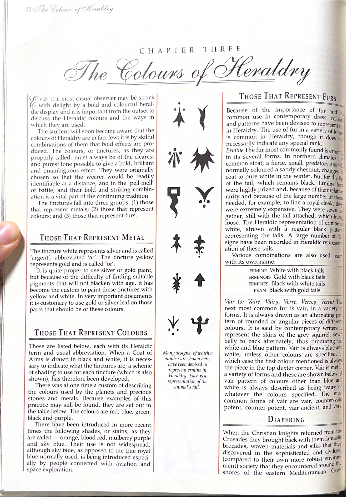
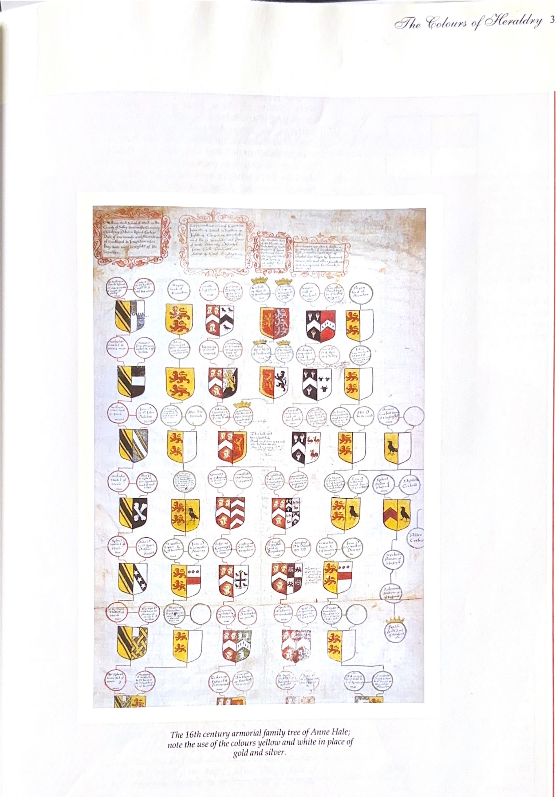
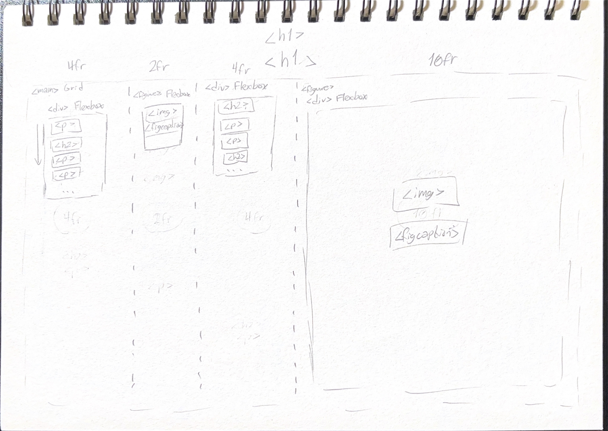
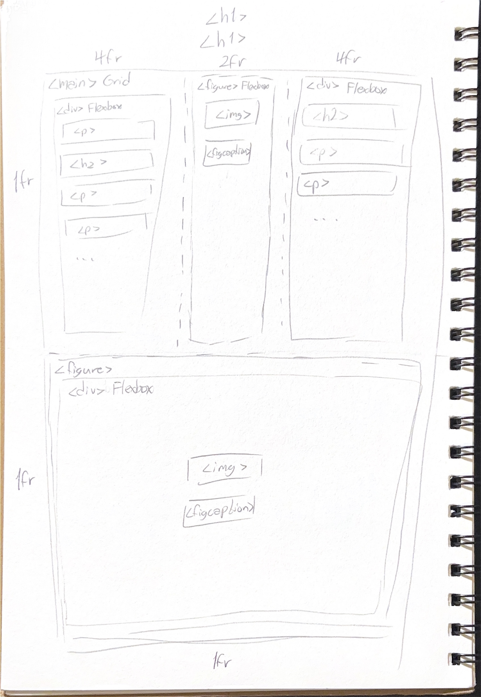

Design Reference


Production Sketches
Computer Layout

Mobile Layout

Goal
My goal for this project was to make an aesthetically-pleasing, funcitonal site about something I'm passionate about. I see this as a combination of my love for web design and my love for Croatian history. I made this site with the expectation that its average user knows next to nothing about Croatia, and that they would leave it with a surface level understanding of the country's history- its main eras, prominent figures, and other significant polities. If people leave this site educated, that's great. If they leave it educated and with a deeper respect for the history of the former Yugoslav countries, even better. And if they book a Dalamatian getaway but stop to visit the historic streets of Zagreb while they're there, I'd be thrilled.
Challenges
My reference has many subtle uses of white space. Replicating them all required lots of attention to detail, and some creativity. The righthand figure was the most challenging element to replicate. I had to create a separate <div> element with its own margins in order to create a gap between the background color and the red borders. I chose to make it a Flexbox container in order to center its contents vertically and horizontally. Adding the white border around the image therein wasn't difficult, but it was unconventional.
The typography also posed some challenges, thoroughly testing my knowledge of CSS properties and techniques. Here's a list of everything I used:
letter-spacingfor the chapter number<h1>elementfont-familyfor the chapter name<h1>elementfont-variantfor the small caps paragraph heading<h2>elements- A unique
classvalue for the first<p>element after an<h2>to distinguish it from the<p>elements that needed to be indented
The double underlines found underneath the chapter name and paragraph headings were particularly challenging. In the reference, the underlines avoid intersecting with the parts of letters that extend beneath the baseline, which is a behavior that is only possible with the underline value of the text-decoration property. However, the underlines are doubled and have widths that do not match the width of their text, which is not possible using the text-decoration property. This was an instance where the capabilities of CSS did not match those of print typography, and I had to compromise. I considered the widths of the underlines their most important aesthetic feature, so I chose to apply a border-bottom property with a style of double.
Sources
Original Layout and Design
I based my project on the design of pages 32-33 of An Introduction to Heraldry by Stefan Oliver, seen above.
Fonts and Typefaces
All web fonts are provided using Google Fonts.
Phase 1 uses Pinyon Script by Nicole Fally
Phase 2 uses the following fonts:
Image Credits
From my Phase 1 mockup:
- Ermine-patterned shield courtesty of Wikipedia
- Heraldic family tree courtesy of griffinrampant.wordpress.com
The images used in Phase 2 are listed at the bottom of that page. Same goes for sources used for content research.
In terms of technical sources, I frequently consulted our class textbook, Learning Web Design, 5th Edition by Jennifer Robins, and W3 Schools for help. I also occasionally used Mozilla's web documentation for developers., and made use of Web AIM's contrast color checker, htmlcolorcodes.com, and flagcolorcodes.com for colors, even though the last one ended up giving me color values that didn't match the SVG from Wikipedia.